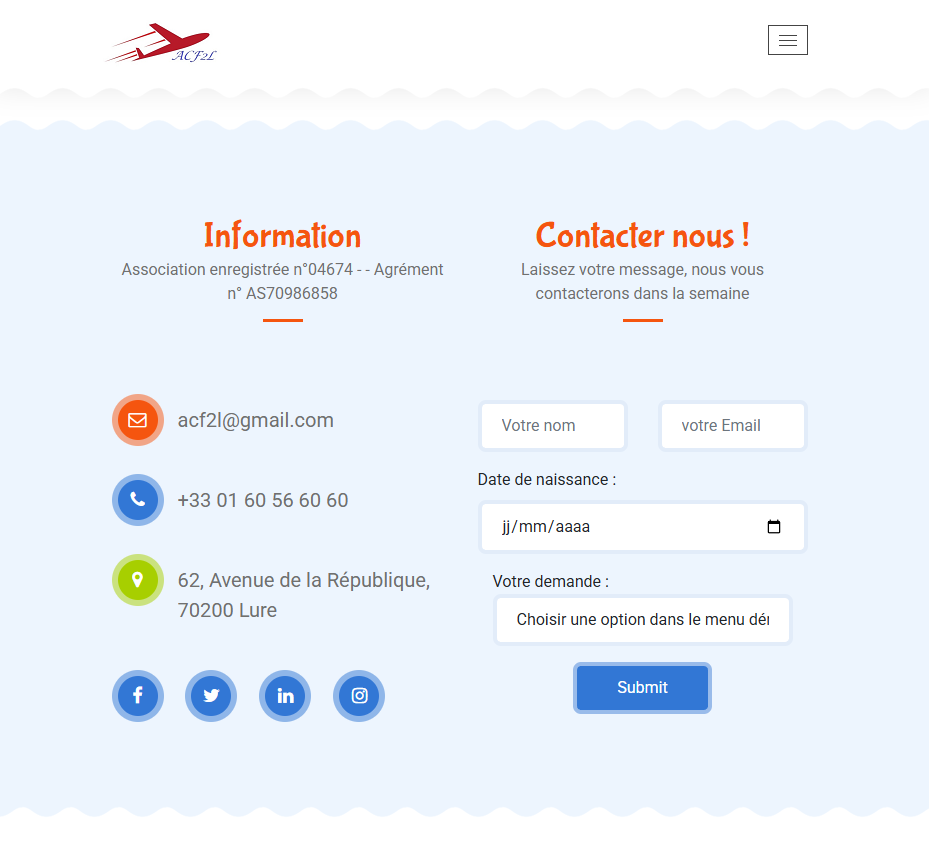

Aéroclub de Frotey-Les-Lures - Réalisé en première année de BTS SIO SLAM - 2023-2024
ACF2L est un site web créé pour l'Aéroclub de Frotey-Les-Lures, une association dédiée à l'aviation légère et aux ULM. Le site permet de présenter les activités du club, les différentes catégories d'ULM, les tarifs, et inclut un formulaire de contact connecté à une base de données.
Ce projet a été réalisé en groupe avec Rauthikan VARATHARAJAH et Ali MOHAMMAD dans le cadre de notre formation BTS SIO SLAM.
La page d'accueil présente un slider avec des images de l'aéroclub et des messages de bienvenue.
Présentation des trois types d'ULM proposés par l'aéroclub : L'autogire ultraléger, Le paramoteur, et Le multiaxes.
Un tableau présente les différents tarifs pour chaque type d'ULM selon la formule choisie.
Le site propose un formulaire de contact qui enregistre les demandes dans une base de données.
Le site a été créé à partir d'un template Bootstrap, adapté aux besoins du client. Les fonctionnalités ont été implémentées en PHP et JavaScript.
Une interface d'administration permet de visualiser, modifier et supprimer les messages reçus via le formulaire de contact.
// Extrait du code pour l'affichage des messages (listeMessages.php)
$requete = "SELECT * FROM message";
if (!($result = mysqli_query($conn, $requete)))
die('Erreur de la requete : ' . $requete);
// Affichage des messages dans un tableau
if (mysqli_num_rows($result) > 0) {
while ($row = mysqli_fetch_assoc($result)) {
echo "<tr>";
echo "<td>" . $row['idMessage'] . "</td>";
echo "<td>" . $row['nomPersonne'] . "</td>";
echo "<td>" . $row['melPersonne'] . "</td>";
echo "<td>" . $row['dateNaissance'] . "</td>";
echo "<td>" . $row['objet'] . "</td>";
echo "<td><a href=deleteMessage.php?id=" . $row['idMessage'] . " onClick=\"return(confirm('Etes-vous sûr de vouloir supprimer ce message ?'));\">delete</a></td> ";
echo "<td><a href=updateForm.php?id=" . $row['idMessage'] . ">update</a></td>";
echo "<tr>";
}
}
Les données du formulaire sont validées et enregistrées dans la base de données MySQL.
// Extrait du code de traitement du formulaire (contact.php)
$nom = $_POST['nom'];
$email = $_POST['email'];
$date = $_POST['dateNaissance'];
$demande = $_POST['demande'];
// Fonction de validation des données
function validDonnees($donnees) {
$donnees = trim($donnees);
$donnees = stripslashes($donnees);
$donnees = htmlspecialchars($donnees);
return $donnees;
}
if (isset($_POST['nom']) and !empty($_POST['nom'])) {
$nom = validDonnees($_POST['nom']);
}
// Insertion dans la base de données
$requete = "INSERT INTO message(nomPersonne, melPersonne, dateNaissance, objet)
VALUES ('$nom', '$email', '$date', '$demande');";
if (!($result = mysqli_query($conn, $requete)))
die("Erreur de la requete :" . $conn->error);
Un widget météo a été intégré pour afficher les conditions actuelles, utile pour les activités de vol.
<div id="ww_ed12fe39bb23b" v='1.3' loc='auto' a='{"t":"responsive","lang":"fr","sl_lpl":1,"ids":[],"font":"Arial","sl_ics":"one_a","sl_sot":"celsius","cl_bkg":"image","cl_font":"#FFFFFF","cl_cloud":"#FFFFFF","cl_persp":"#81D4FA","cl_sun":"#FFC107","cl_moon":"#FFC107","cl_thund":"#FF5722","sl_tof":"5"}'>
Plus de prévisions: <a href="https://oneweather.org/fr/paris/30_jours/" id="ww_ed12fe39bb23b_u" target="_blank">Meteo 30 jours</a>
</div>
<script async src="https://app2.weatherwidget.org/js/?id=ww_ed12fe39bb23b"></script>
Ce projet m'a permis de mettre en pratique mes compétences en développement web et de travailler en équipe sur un projet concret.